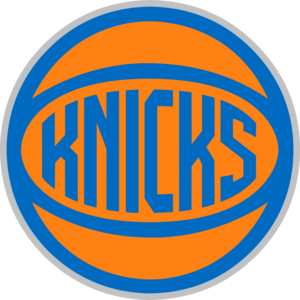
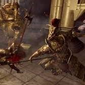
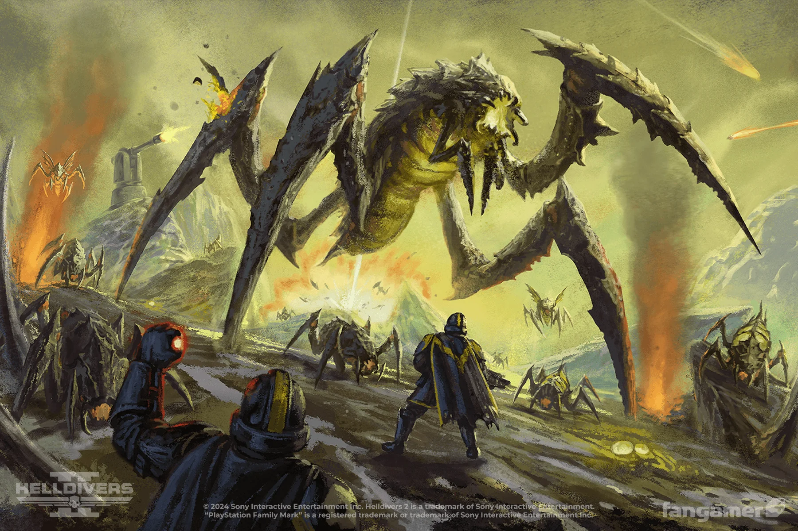
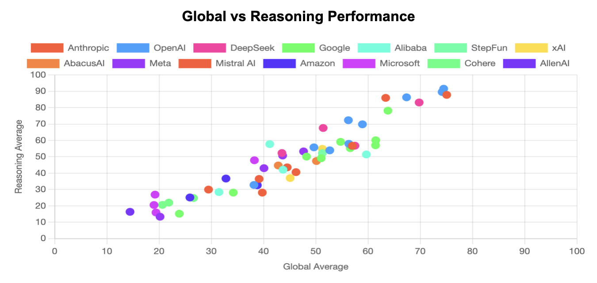

Steven's CSC 170 Project 3"New York’s Team, New York’s Dream!"
The New York Knickerbockers,commonly referred to as the New York Knicks, are an American professional basketball team based in the New York City borough of Manhattan. The Knicks compete in the National Basketball Association (NBA) as a member of the Atlantic Division of the Eastern Conference
Enter a world where fire births life and darkness consumes it. Dark Souls is a haunting tale of cycles—of kingdoms rising and falling, gods fading, and heroes sacrificing everything to hold back the inevitable. From the fading First Flame to the corrupted depths of the Abyss, uncover the forgotten stories that shape this legendary world.

Helldivers 2 is a cooperative third-person shooter developed by Arrowhead Game Studios and published by Sony Interactive Entertainment. Released on February 8, 2024, for PlayStation 5 and Windows, it is a direct sequel to the 2015 game Helldivers. Set in the 22nd century, players control elite soldiers known as Helldivers, tasked with defending humanity against alien threats.

LiveBench is a dynamic, contamination-resistant benchmark developed by a collaboration of institutions including Abacus.AI, NYU, Nvidia, and others, to rigorously evaluate the performance of large language models (LLMs) across a wide range of tasks such as reasoning, coding, mathematics, data analysis, language comprehension, and instruction following.
